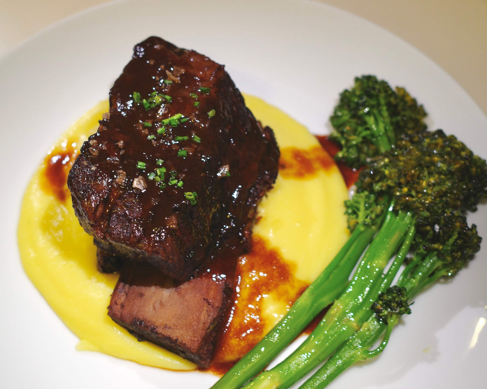

Architecting and building the first winnable quantum game.
Steering the exact vector of quantum evolution.
Rejecting uncontrolled outcomes.
Coupling hardware acceleration with civilizational responsibility.
New paradigms for quantum information processing (Stanford).
Tabletop dark matter detector with part-per-billion sensitivity (Williams College).
Tactical simulation software for asteroid-bound explosive ordnance (Lawrence Livermore).
Quantum biology; landscape photography; cooking; violin; golfing.
Steve Jobs; Claude Monet; Kanye West; Peter Zumthor; Dieter Rams; Richard Hamming.
ttc [at] stanford [dot] edu
Braised Beef Short Ribs & Pommes Purée
Hardware
Dutch Oven, Stainless Steel Pot, Blender, Cheesecloth
Protein
Short Ribs (Bone-in)
Aromatics
Onion, Carrot, Celery, Tomato Paste
Solvents
Red Wine (Cabernet), Beef Stock (Gelatinous)
Starch
Yukon Gold Potatoes
Emulsion
Butter (Cold), Lemon Juice (Acid)

-0:10
0:00
0:35
//
3:30
4:00
4:15
A: Protein
Prep
Sear
Deglaze
Braise
Strain
Reduce
B: Starch
Prep
Boil
Emulsify
T-00:10
A
Prep — Salt ribs. Medium dice mirepoix (onion, carrot, celery). 10m.
T+00:00
A
Sear Protein — Dutch Oven, high heat. Deep Maillard crust. Remove. 20m.
T+00:20
A
Mirepoix + Deglaze — Sauté aromatics. Deglaze w/ Cabernet (lift fond). Add beef stock. 15m.
T+00:35
A
Braise — Oven @ 325°F. Collagen → gelatin conversion. 3h 25m. [Passive]
T+03:30
B
Prep Potatoes — Peel, cube Yukon Golds. Cold water start. 15m.
T+03:45
B
Boil — Until fork-tender. 25m.
T+04:00
A
Filtration — Remove meat. Strain liquid through cheesecloth. Discard solids. 5m.
T+04:05
A
Reduction — High heat. Reduce braising liquid to demi-glace consistency. 10m.
T+04:10
B
Emulsify — Drain. Blender. Add cold butter + lemon juice (acid). 5m.
T+04:15
A+B
Plate — Pommes purée base. Short rib. Pour reduction over meat.
Poulet à la Provençale
Hardware
Dutch Oven
Protein
Whole Chicken Leg (Bone-in, Skin-on)
Matrix
Cherry Tomatoes, Bell Peppers, Shallots, Garlic, Tangerine, Rosemary
Solvents
Dry White Wine (Sauvignon Blanc), Chicken Stock
Integration
Pesto Rigatoni / Saffron Rice
-0:10
0:00
0:15
0:30
1:10
1:15
Prep
Sear
Extract
Deglaze
Assemble
Braise
Finish
T-00:10
Prep — Salt chicken. Mince shallots/garlic. Julienne bell peppers. Halve tangerine. 10m.
T+00:00
Sear — Cold dutch oven start. Med-High. Render fat. Crisp skin. 15m.
T+00:15
Extraction — Remove chicken. Sauté shallots/garlic in schmaltz. 5m.
T+00:20
Deglaze — Add wine. Scrape fond. Reduce by half. 5m.
T+00:25
Assembly — Add tomatoes, bell peppers, stock. Place tangerine half (face down). Return chicken (skin up). Rosemary. 5m.
T+00:30
Braise — Oven @ 375°F. Uncovered (maintains skin texture). 40m. [Passive]
T+01:10
Finish — Remove. Rest 5m. Top with parsley/zest.
On Great Quantum Engineering
A definite optimist's philosophy on quantum systems engineering
"In order to improve your game, you must study the endgame before everything else." — José Raúl Capablanca, World Chess Champion 1921
Casual chess players learn the game forward. They memorize openings and hunt for tactical advantages in the middle game, winning material here or dominating a file there. They view the game as a collection of local optimizations, hoping that if they win enough small battles, the war will take care of itself.
The Grandmaster inverts this logic. He studies the endgame first because he understands that a checkmate with a single pawn is worth more than a draw with a full queen advantage. He does not play to accumulate material; he plays to force a specific, simplified state where victory is inevitable.
This analogy articulately transposes to the difference between good versus great engineering. A good engineer is a master of tactics. He can optimize a specific component, minimize a specific noise source, or design a beautiful control loop. He wins material. But the great engineer, much like Capablanca, is obsessed with the endgame. He understands that a "better" component is worthless if it does not improve his final device performance. He defines the particular application first, and then derives every move in the stack—from the hardware topology to the compilation strategy—directly from the final winning endgame.
I learned this lesson the hard way. As I transitioned from the clean, bounded problems of physics coursework to the chaos of building a quantum information processor, I realized all I had learned in school was tactics. I could stabilize the frequency of a laser or improve the coherence of a qubit, but I lacked the clarity of a Grandmaster. I found myself asking: How do I identify the point of diminishing returns? Amidst a seemingly boundless number of optimization problems, how do I choose the few that actually move the needle?
These were daunting questions, but I quickly realized that the inability to answer them is not a skill issue. Rather, it is a deficiency of framework. The great engineer succeeds not just because he can build, but because he treats the endgame not merely as an outcome but rather the generator of logic. I truly believe that if you can strictly define a clear end goal, you can derive the framework through which you analyze your entire engineering workflow.
Such rigorous, systems-level derivation is foreign to the quantum information processing community. Our field is entranced by a ubiquitous dosage of indefinite optimism. We are magnetized by the shimmering notion of "Universal Fault Tolerance"—a horizon that promises a trillion dollar market despite lacking verifiable advantage in almost any application beyond factoring primes. Attempting to engineer for universality and optionality offers the comfort of avoiding the risk of a wrong commitment. But the indefinite optimist pays the cost of forever waiting for a better future to arrive; he can never chart and build that future for himself. And in that endless wait, desperately treading water until the next ambiguous dopamine hit arrives, the decay to indefinite pessimism is both inevitable and tragic.
We must be definite optimists. The only way to break out of this trance and architect a better future outcome is to define a winnable quantum game. By constraining the endgame to a single, verifiable application, we force the development of the very framework that the indefinite optimist avoids.
Consider the architectural decisions required to build a functional quantum information processor. The engineer must correctly select: qubit modality, qubit encoding, system connectivity, entanglement method, error correction code, and circuit compilation strategy.
In this stack, there is no partial credit. If any single one of these layers is incorrect, the machine will not produce quantum advantage. In the pursuit of general universality, the engineer is forced to operate in a design space of maximum entropy. He must consider every application and no application simultaneously, making isolated optimizations based on local intuition. In reality, the magnitude of his work is wasted by the chaos of his direction.
But if you impose a defined endgame, you apply a rigorous boundary condition that drastically limits the space of possible trajectories. You trade 99% of possible applications, speculative market verticals, and the seductive promise of a universal outcome for a design parameter space that you can explore ergodically. To statistically guarantee the system reaches the winning game state, one must brutally restrict the search volume. By restricting the scope of application, you give yourself an opportunity for engineering decisions to compound productively. The application dictates the connectivity; the connectivity constrains the error correction; the error correction selects the qubit. This is the only way to reach a winning endgame.
I propose that we stop treating the architecture of a quantum computer as a speculative bet, and start treating it as a derived solution. We must fix the endgame not to a vague market vertical but to a specific computational victory. We must select a single, well-defined algorithm—whether it is a specific Hamiltonian simulation or a targeted optimization routine—and anchor the entire stack to that singular point. This constraint transforms the engineering process. It enables us to quantitatively evaluate every decision, replacing the aimless optimization of micro-metrics with a rigorous analysis of resource management, time overhead, and error budgeting. These will become the first true fundamentals of quantum systems engineering.
The utility of studying the endgame extends far beyond the engineering stack. It illuminates the commercial path and dictates the precise talent density required to walk it. By fixing the application and developing rigorous quantum systems engineering framework, one can turn a lottery ticket into a deterministic execution plan. The great engineer does not rely on the luck of a million-to-one shot. He rigs the outcome by choosing an endgame where he possesses an asymmetric advantage, leaving only one variable: his own ability to execute.
This is the essence of requirements-based engineering. It is the discipline of sacrificing the infinite potential of what a machine might do, for the absolute certainty of what it must do. We ignore the blind stumble toward a trillion-dollar fantasy, and we instead evaluate how to win every necessary battle on the way to the endgame.
The natural objection to this philosophy is fear of the ceiling. The skeptic asks: If we build for a specific application, do we not cap our potential? By ignoring the "universal" dream, are we leaving the trillion-dollar opportunity on the table?
Such an attitude assumes that one can only play this game once.
You cannot change the world overnight. To believe otherwise is vanity. The winning strategy is to identify a winnable game: a scoped, defined challenge that pushes the limits of the possible, yet remains grounded enough that your derived framework allows you to execute flawlessly with deterministic precision.
The reward for winning this game is that you earn the right to play again.
You take the capital, the credibility, the system frameworks, and the hardened team from the first victory, and you deploy them into a slightly larger, slightly harder game. You repeat this loop. Solve, win, expand. Eventually, you look up and realize you have been riding the crest of the technological frontier for twenty-five years, keeping your finger on the pulse of possibility, always the first to identify the next game that incrementally pushes the boundary of human capability.
The "universal" machine is not built by the dreamer who tries to do everything at once and fails. It is built by the grand strategist who wins one specific game after another, until the universal machine ceases to be a dream, becoming instead the inevitable sum of his sequential victories.
History confirms this strategy of success. The modern paradigms we stand on today were not born from universal ambitions, but from the sequential conquest of specific games.
The analogy is literal in the case of DeepMind, for example. It's well-known that Demis Hassabis has long dreamed of general intelligence, but his team did not begin by attempting to solve for this universal outcome. They began by finding small, bounded games where they could engineer an asymmetric advantage. They started with Pong. That victory snowballed into Go, then Chess, then Starcraft, and eventually into biology with AlphaFold. The talent and infrastructure forged in those "games" became the foundation for the Gemini models powering the world today.
We see the same lineage in NVIDIA. Today, they are the undisputed sovereign of the AI compute stack, but their path was not a straight line to the H200. It began with the humble "game" of 3D graphics rendering. They won that market, then pivoted to a new, slightly harder game. They realized that the massive parallelization required to render pixels was mathematically relevant to many of the operations required for scientific computing. By winning these niche industrial games, they inadvertently built the exact linear algebra engines that served as a foundation for crypto mining, and finally, for the massive matrix multiplications of deep learning. They did not set out to build the world's AI infrastructure; they simply built a hardware stack capable of winning the game in front of them, over and over again.
Quantum computing is currently trying to skip this history. The industry is attempting to jump straight from the lab bench to the "Universal Machine" without ever playing the intermediate games of Pong or scientific simulation. We are trying to be NVIDIA in 2024 without ever being NVIDIA in 1999.
This is why I am insisting on a defined endgame. I am not limiting the scope of quantum mechanics; I am simply looking for its first "Pong." By solving a specific, high-value problem, we do more than just generate scientific data. We build the "CUDA" of quantum: the control systems, the calibration routines, and the engineering culture required to scale. We win the right to play again. And when we look up twenty-five years from now, we will find that the universal machine we dreamed of was not a miracle we waited for, but the inevitable sum of the games we chose to win.
This essay is an unlisted working draft.
Incorrect password.